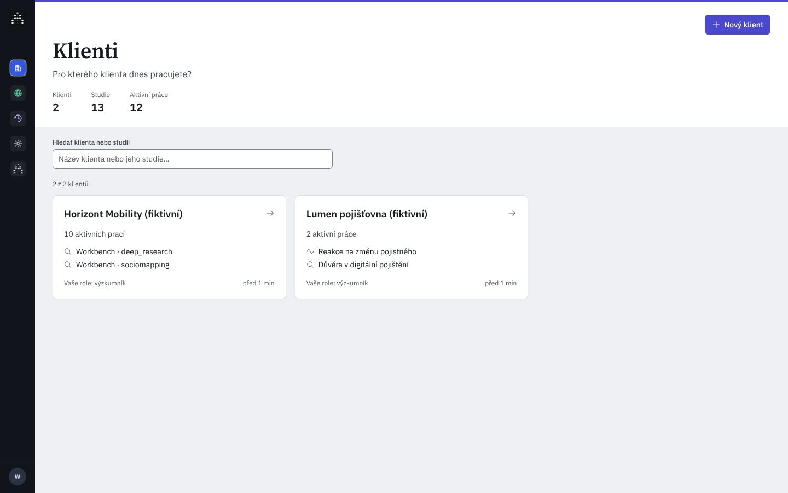
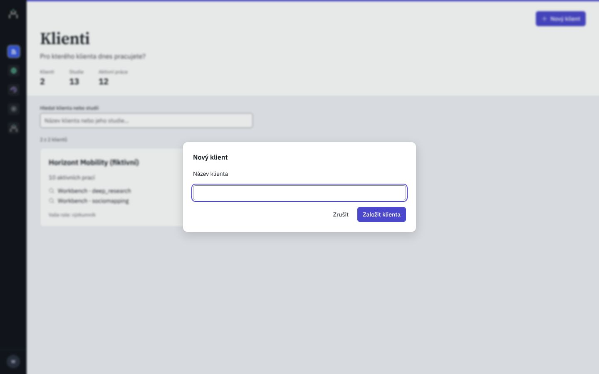

Pracovní prostor
Klienti
Pro kterého klienta dnes pracujete? Každý klient má své výzkumy, znalosti, soubory a pravidla; nic z toho nevidí jiný klient.
- Klienti
- {{nClients}}
- Studie
- {{nStudies}}
- Aktivní práce
- {{nActive}}
Pro kterého klienta dnes pracujete? Každý klient má své výzkumy, znalosti, soubory a pravidla; nic z toho nevidí jiný klient.
Žádný klient ani jeho rozpracovaná studie neodpovídají hledání „{{q}}“. Starší studie najdete ve Výzkumech klienta: jejich hledání čte i to, co říkají designy.
Hledání prochází název klienta a jeho dvě nejnovější rozpracované studie. Všechny studie klienta jsou na jeho záložce Výzkumy.
Adresář klientů: první obrazovka po přihlášení. Dnes karty v mřížce, hledání, které slibuje víc, než umí, a nic o tom, kde která práce stojí. Kód develop @ a1a9a45c; C/ = apps/web/src/components/aia/clients/, W/ = apps/api/src/aia_api/routers/workspace.py.


Klient je hned váš i celé organizace. Jeho stav (aktivní, archivovaný) mění vlastník nebo správce v Nastavení.
Klient „{{draft}}“ už existuje. Chcete ho otevřít? Druhého se stejným názvem AIA založí, ale budete je těžko rozlišovat.